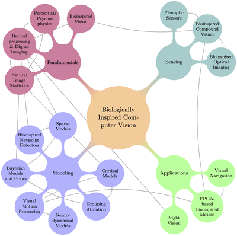

Table of contents

{kind=link}
Section I. Fundamentals
- - Frontmatter and foreword, by Jeanny Herault
- Chapter 1. Introduction, G. Cristóbal, L. Perrinet and M. Keil
- Ch2. Bio-inspired vision, C. Posch
- Ch3. Using HVS for Low-Level Image Processing, D. Aleysson and G. Nathalie
- Ch4. Modeling natural image statistics for Computer Vision, H.E. Gerhard and M. Bethge
- Ch5. Perceptual Psychophysics, C. Alejandro Párraga
Section II. Optics and Sensing
- Ch6. Bioinspired Optical Imaging, M. Sarkar
- Ch7. Biomimetic vision systems, R. Voelkel
- Ch8. Plenoptic sensors, F. Pérez
Section III. Modeling
- Ch9. Probabilistic Inference and Bayesian Priors in Visual Perception, G. Sotiropoulos and P. Series
- Ch10. From Neuronal Models to Neuronal Dynamics and Image Processing, M. Keil
- Ch11. Computational models of Visual Attention and Applications, O. LeMeur and M. Mancas
- Ch12. Visual Motion Detection and Human Behaviour, A. Montagnini, L. Perrinet and G. S. Masson
- Ch13. Cortical networks of visual recognition,, M. Cord, C. Theriault and N. Thome
- Ch14. Sparse Models for Computer Vision, L. Perrinet
- Ch15. Biologically Inspired Keypoint Detectors, A. Alahi, G. Goetz and E. D'Angelo
Section IV. Applications
- Ch16. Nightvision based on a biological model. M. Oskarsoon, H. Malm and E. Warrant
- Ch17. Bio-inspired Motion Detection based on a FPGA platform. T. Köhler
- Ch18. Visual Navigation in a Cluttered World, N.A. Browning and F. Raudies